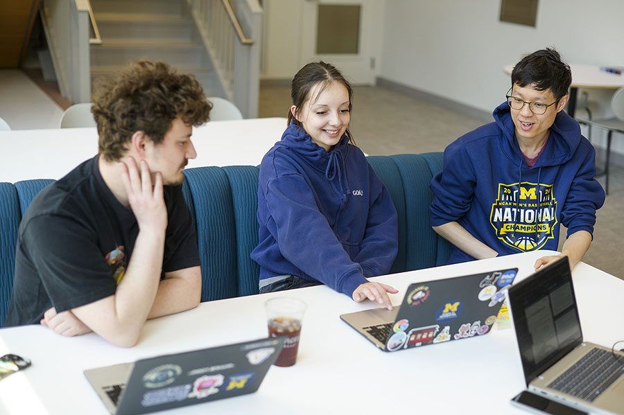

Social Identity Snapshot
Diagnostic tool to reflect on self-awareness and positionality before entering community contexts.
Setting the foundation, understanding community context, and evaluating team readiness before work begins.
Before writing code, sketching wireframes, or analyzing datasets, engaged learners must cultivate social identity awareness and ethical humility. Entering a community or client environment without examining your own assumptions can lead to misaligned expectations or unintended harm. Preparing thoughtfully allows you to approach partners not as an outside "expert" fixing a problem, but as a collaborative learner working alongside stakeholders.
Engaged learning projects can change as new needs, constraints, and insights emerge. Find guidance for the stage of work you are navigating
Diagnostic tool to reflect on self-awareness and positionality before entering community contexts.
Quick audit for personal assumptions and ethical readiness.
Framework for understanding levels of community involvement and decision-making power
Guidance on translating partner needs into realistic project goals.
&
Guide: Roles, expectations, and commitments for student organization leaders.
Formal agreement outlining responsibilities for student leads.
Guidance on clarifying the project scope and objectives, team roles, and timeline. This worksheet can be used by the project team and shared with the client.
